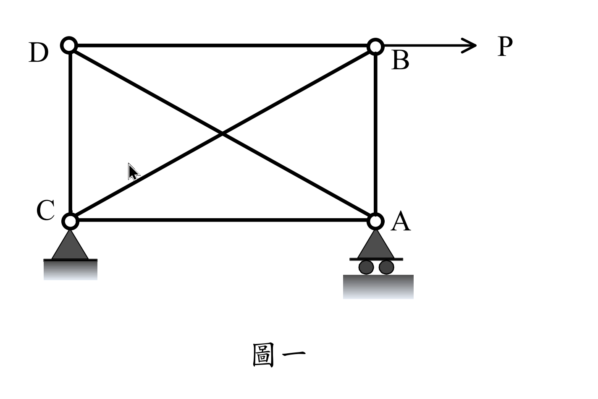
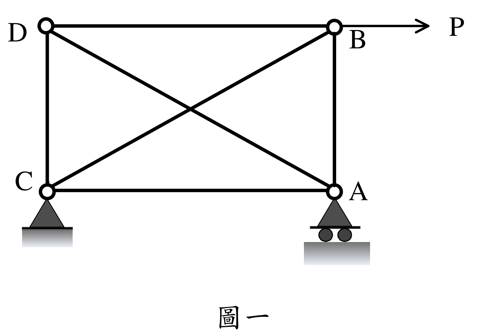
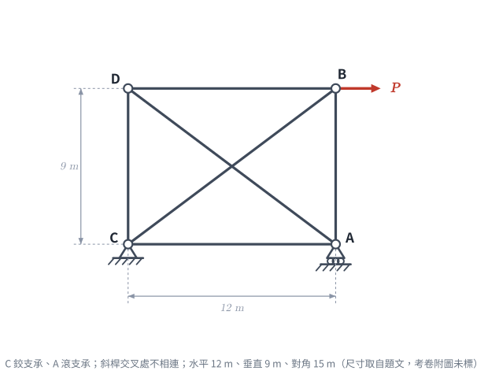
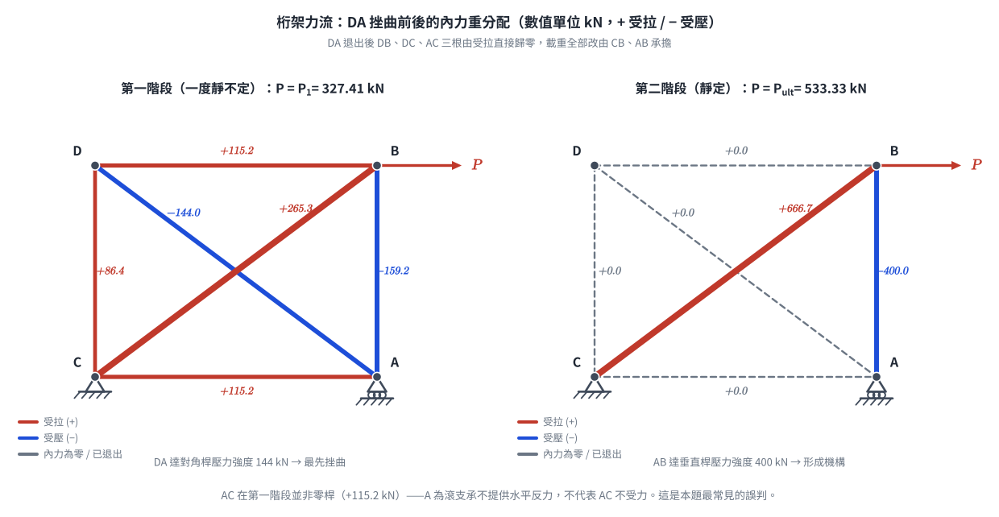
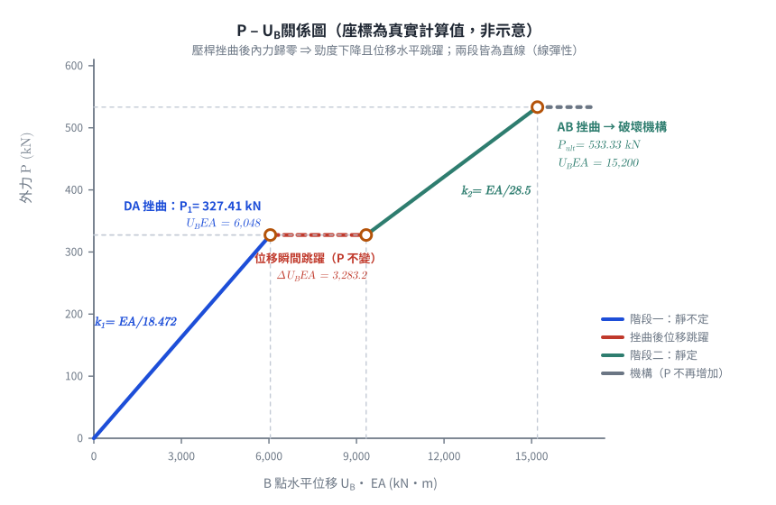

📄 題目正本（考卷原文、附圖與判讀清單；不含解法）
SA-2019-1 題目正本
本檔只記錄考卷上寫了什麼、圖上畫了什麼，不含任何解法。解析見同資料夾
SA-2019-1.md。
判讀清單經使用者確認前，狀態為「待確認」；確認後本檔原則上不再修改（改動須回考卷原圖並記 log）。
| 項目 | 內容 |
|---|---|
| 考卷 | raw/exams/SA-2019_結構學.pdf，頁次 3－1，第一題（圖一） |
| 考年 | 2019（民國 108 年）專技高考結構工程技師「結構學」 |
| 配分 | 25 分 |
| 附圖 | SA-2019-1-fig-1.png、SA-2019-1-fig-2.png |
| 判讀狀態 | 已確認（2026-11-07 使用者確認。原轉錄：2026-11-07 轉錄；PyMuPDF 110 dpi 整頁＋300–500 dpi 局部放大、PDF 向量座標核對；盲讀於開啟解析前完成） |
1. 考卷原文（逐字）
一、如圖一所示之桁架，各桿件都有相同之楊氏模數E 及斷面積A。已知對角桿件長15 m，水平桿件長12 m，垂直桿件長9 m。若各桿件之軸拉強度都為1250 kN，而軸壓強度如下：對角桿件144 kN、水平桿件225 kN、垂直桿件400 kN。今考慮B 點受一向右之力P，若P 由0 逐漸加大，則B 點之向右位移UB 也會逐漸加大，直至最後桁架會形成破壞機構。試求出破壞機構形成時對應之極限外力，並且以P 為縱軸UB 為橫軸，試繪出加載至破壞機構過程中P 對UB 的定性（大致）關係圖。假設各桿件強度達到之前都是線彈性，而強度達到後，張桿內力可以維持其強度但壓桿內力變為零，此外不論張或壓桿，強度達到後勁度都為零。（25 分）
2. 考卷給的公式、附表與參數
- 考卷沒有給任何參考公式或附表。
- E、A 各桿相同，沒有數值（P–U_B 圖為定性）。
- 軸拉強度 1250 kN（全部桿件）；軸壓強度：對角 144 kN、水平 225 kN、垂直 400 kN。
- 材料行為：達強度前線彈性；達強度後張桿維持強度、壓桿內力變為零；勁度皆為零。
- 卷首注意事項：㈠可以使用電子計算器。㈡不必抄題，作答時請將試題題號及答案依照順序寫在試卷上，於本試題上作答者，不予計分。㈢本科目除專門名詞或數理公式外，應使用本國文字作答。
- 考試時間：2 小時。
3. 附圖

證據圖 SA-2019-1-fig-1.png

證據圖 SA-2019-1-fig-2.png（2026-11-07 自考卷重新擷取 500 dpi，無游標）
圖面文字照錄：D、B、P、C、A、圖一
4. 判讀清單
| # | 項目 | 判讀 | 圖上／題文依據 | 把握 |
|---|---|---|---|---|
| 1 | 節點 | D 左上、B 右上、C 左下、A 右下 | 圖面字母 | 確定 |
| 2 | 桿件 | DB、CA（水平）、DC、BA（垂直）、DA、CB（對角）共 6 根；對角交叉不相連 | 交叉點無圓圈 | 確定 |
| 3 | C | 鉸支承（2 反力） | 實心三角形接地 | 確定（解讀）；使用者確認 |
| 4 | A | 滾支承（三角形＋兩圓輪）：提供垂直反力 | 圖面 | 確定（解讀）；使用者確認 |
| 5 | 幾何 | 水平 12 m、垂直 9 m、對角 15 m（圖上沒有尺寸線） | 題文 | 確定 |
| 6 | 載重 | B 點 P 水平向右，由 0 漸增 | 箭頭由 B 向右 | 確定 |
| 7 | 強度 | 拉 1250（全部）；壓 對角 144、水平 225、垂直 400 kN | 題文 | 確定 |
| 8 | 靜不定度 | m 6＋r 3＝9＞2j 8：一度靜不定 | 計數 | 確定 |
| 9 | 所求 | 破壞機構形成時之極限外力；P–U_B 定性圖 | 題文 | 確定 |
| 10 | 證據圖 | 舊 fig-1 的箭頭游標在 C–B 斜桿附近；新增 fig-2（500 dpi） | — | 確定 |
轉錄：2026-11-07（SA-U2-1 題目正本推廣・批 1）
確認：2026-11-07 使用者確認
考題編號：SA-2019-1
主分類： SA-U2-1 靜不定結構最小功法
副分類： SA-U1-1 靜不定度與穩定性之判斷
分析法： 最小功法 / 靜定分析
標籤： 靜不定桁架 最小功法 破壞機構 挫曲 極限載重
1. 題目（考卷原文見題目正本）
考卷原文、公式／附表、附圖與判讀清單（已確認）見
SA-2019-1-problem.md。本節只列解題時最容易讀錯的地方與本解使用的記號；題意以題目正本為準。

重繪自考卷附圖，依判讀清單 #1–#10 重繪；考卷附圖沒有尺寸線，尺寸取自題文。攔：A、C 支承互換、斜桿交叉點當成節點。
常見誤讀
| 項目 | 正確判讀 | 常見誤讀 |
|---|---|---|
| 支承 | C 鉸支承、A 滾支承 | 互換 |
| 斜桿交叉 | 不相連（一度靜不定） | 當成節點 |
| 破壞後行為 | 張桿維持強度、壓桿內力歸零，兩者勁度皆為零 | 壓桿也維持強度 |
本解記號： 記號與正負號約定沿用 §4。
2. 考題核心精神與出題者意圖 (Core Concepts & Examiner's Intent)
本題旨在測驗考生對於靜不定桁架的內力分析（最小功法）以及結構非線性行為（構件挫曲失效後的內力重分配）的掌握。
出題者特別設定「壓桿強度達到後內力變為零（挫曲喪失承載力）」，考驗考生能否判斷出第一構件失效後，結構退化為靜定桁架，並繼續承受載重直到下一個構件失效形成「破壞機構」。同時，要求繪製 $P-U_B$ 關係圖，測驗對於「勁度變化」與「位移跳躍」等行為的物理直覺。
3. 解題戰略地圖與陷阱分析 (Strategic Roadmap & Trap Analysis)
- 第一階段（靜不定分析）：
- 結構具有一根多餘桿件（一度靜不定），選定對角桿 DA 內力為贅力 $T$。
- 利用節點法寫出各桿內力（以 $P$ 和 $T$ 表示）。
- 利用最小功法（$\frac{\partial U}{\partial T} = 0$）解出 $T$ 與 $P$ 的關係，並求出第一階段的 $U_B$。
- 第一破壞點尋找：
- 將 $T$ 代回各桿內力，找出最先達到強度極限的構件（需區分拉壓極限）。
- 壓桿失效後內力歸零，求出此時的外力 $P_1$。
- 第二階段（靜定分析與內力重分配）：
- 第一構件失效後，結構退化為靜定桁架。計算瞬間位移跳躍。
- 繼續增加 $P$，直到下一個構件達到強度極限，此時結構無法維持平衡，即形成破壞機構。
- 求出極限外力 $P_{ult}$ 及對應的最終位移。
[!WARNING] 陷阱警告
1. 壓桿失效行為： 題目明訂「壓桿內力變為零」，而非維持降伏強度。這代表挫曲後會發生內力重分配與位移的瞬間跳躍（Snap-through）。
2. 底弦桿 AC 的存在： 雖然 A 點為滾支承不提供水平反力，但 AC 桿仍是桁架系統的一部分，受力不為零，必須計入應變能中。
3.5 變數層次分析 (Variable Hierarchy Analysis)
複習提示：第一次解題後，在每個卡住的知識點旁標記
⚠；第二次複習時只看有⚠的項目。
最終目標
計算各階段失效載重與位移，並繪製 P-UB 關係圖
本題關鍵公式（依計算順序）
$\boxed{\cdot}$ = 需由前步驟推導，非題目直接給定的變數
$$\text{Step 1: } \frac{\partial U}{\partial T} = \sum \left( \frac{F_i \cdot L_i}{EA} \cdot \frac{\partial F_i}{\partial T} \right) = 0$$
$$\text{Step 2: } P_1 = \min \left( \frac{\text{Capacity}_i}{| \boxed{F_i} |} \right)$$
$$\text{Step 3: } U_B = \sum \frac{\boxed{F_i} \cdot f_i \cdot L_i}{EA}$$
L1：題目直接給定
| 符號 | 數值 | 說明 |
|---|---|---|
| $L_h$ | $12\text{ m}$ | 水平桿長度 |
| $L_v$ | $9\text{ m}$ | 垂直桿長度 |
| $L_d$ | $15\text{ m}$ | 對角桿長度 |
L2：需知識點推導
Step 1：最小功法求贅力
| 符號 | 公式/來源 | 卡關? |
|---|---|---|
| $T$ | $\sum F_i \frac{\partial F_i}{\partial T} L_i = 0$ |
Step 2：位移計算
| 符號 | 公式/來源 | 卡關? |
|---|---|---|
| $U_B$ | 單位力法 $U_B = \sum \frac{F_i f_i L_i}{EA}$ |
L3：深層知識（不懂就卡住）
| 知識點 | 說明 | 卡關? |
|---|---|---|
| 失效機制的轉換 | 壓桿挫曲後內力歸零，結構靜不定度降低一度，變為靜定結構。 | |
| 破壞機構的定義 | 靜定結構若再有一桿件失效，即無法維持靜力平衡，形成破壞機構。 |
4. 步驟化詳細計算過程 (Step-by-Step Detailed Calculation)
Step 1：靜不定桁架內力分析
設對角桿 DA 之內力為 $T$（張力為正）。以節點法推導各桿內力：
- 節點 D：$\sum F_x = 0, \sum F_y = 0 \Rightarrow F_{DB} = -0.8T$, $F_{DC} = -0.6T$
- 節點 B：外力 $P$ 向右，$\sum F_x = 0 \Rightarrow F_{BC} = 1.25P + T$；$\sum F_y = 0 \Rightarrow F_{AB} = -0.75P - 0.6T$
- 節點 A：滾支承無水平反力，$\sum F_x = 0 \Rightarrow F_{AC} = -0.8T$
利用最小功法（卡氏第二定理）求 $T$：
$$\frac{\partial U}{\partial T} = \frac{1}{EA} \sum F_i \frac{\partial F_i}{\partial T} L_i = 0$$
列表計算：
| 桿件 | $L_i$ | $F_i$ | $\frac{\partial F_i}{\partial T}$ | $F_i \frac{\partial F_i}{\partial T} L_i$ |
|------|-------|-------|-----------------------------------|-------------------------------------------|
| DA | $15$ | $T$ | $1$ | $15 T$ |
| BC | $15$ | $1.25P + T$ | $1$ | $18.75 P + 15 T$ |
| DB | $12$ | $-0.8T$ | $-0.8$ | $7.68 T$ |
| AC | $12$ | $-0.8T$ | $-0.8$ | $7.68 T$ |
| DC | $9$ | $-0.6T$ | $-0.6$ | $3.24 T$ |
| AB | $9$ | $-0.75P - 0.6T$| $-0.6$ | $4.05 P + 3.24 T$ |
加總令其為零：
$$(15 + 15 + 7.68 + 7.68 + 3.24 + 3.24) T + (18.75 + 4.05) P = 0$$
$$51.84 T + 22.8 P = 0 \quad \Rightarrow \quad T = -\frac{22.8}{51.84} P = -\frac{95}{216} P \approx -0.44 P$$
代回求各桿內力與極限載重：
- DA桿 (壓)：$F_{DA} = -\frac{95}{216} P$，容量 $144\text{ kN} \Rightarrow P_1 = 144 \times \frac{216}{95} = 327.41\text{ kN}$ (最先失效)
- AB桿 (壓)：$F_{AB} = -\frac{105}{216} P$，容量 $400\text{ kN} \Rightarrow P = 400 \times \frac{216}{105} = 822.86\text{ kN}$
- BC桿 (拉)：$F_{BC} = \frac{175}{216} P$，容量 $1250\text{ kN} \Rightarrow P = 1250 \times \frac{216}{175} = 1542.86\text{ kN}$
此階段 B 點位移 $U_{B1}$（利用單位力法，或 $U_B = \frac{\partial U}{\partial P}$）：
$$U_{B1} = \frac{665}{36} \frac{P}{EA} \approx 18.47 \frac{P}{EA}$$
當 $P = 327.41\text{ kN}$ 時，$U_{B1} = \frac{6048}{EA}$。
Step 2：第一構件失效後（靜定狀態）
當 $P$ 達到 $327.41\text{ kN}$，DA 桿挫曲，依題意壓桿內力變為零（$T=0$）。
結構退化為靜定桁架，內力發生瞬間重分配：
- $F_{BC} = 1.25P$
- $F_{AB} = -0.75P$
- 其餘桿件內力為 0
此時外力 $P$ 仍為 $327.41\text{ kN}$，計算重分配後的位移 $U_{B2}$：
$$U_{B2} = \sum \frac{F_i f_i L_i}{EA} = \frac{1}{EA} \left[ 15(1.25P)(1.25) + 9(-0.75P)(-0.75) \right] = 28.5 \frac{P}{EA}$$
瞬間跳躍位移為 $U_{B2} = 28.5 \times 327.41 / EA = \frac{9331.2}{EA}$。
Step 3：載重增加至破壞機構
繼續增加 $P$，靜定結構的構件將達到極限：
- AB桿 (壓)：容量 $400\text{ kN} \Rightarrow P_{ult} = \frac{400}{0.75} = 533.33\text{ kN}$
- BC桿 (拉)：容量 $1250\text{ kN} \Rightarrow P = \frac{1250}{1.25} = 1000\text{ kN}$
AB 桿最先達到 $400\text{ kN}$ 壓力而挫曲，依題意內力歸零。
為什麼此時就是破壞機構？
DA 與 AB 都退出後，尚在作用的桿件只剩 DB、DC、AC、CB 四根：
$$m + r = 4 + 3 = 7 \;<\; 2j = 8$$
方程式比未知數多一個 $\Rightarrow$ 結構為一自由度機構。逐節點檢查可以看得更直接
（注意 $P$ 是水平力，矛盾並非出在「B 點的垂直分量」）：
| 節點 | 尚存桿件 | 平衡方程 | 結果 |
|---|---|---|---|
| D | DB, DC | $\sum F_x = 0$ | $F_{DB} = 0$ |
| B | BD, BC | $\sum F_y = 0$ | $F_{BC} = 0$ |
| B | BD, BC | $\sum F_x = 0$ | $F_{BD} = P$ |
節點 D 要求 $F_{DB} = 0$，節點 B 卻要求 $F_{DB} = P$——除非 $P = 0$，否則無解。
結構已無法以任何內力組合平衡外力，破壞機構形成。
因此，極限外力 $P_{ult} = 533.33\text{ kN}$。
破壞時的最大位移：
$$U_{B,ult} = 28.5 \times \frac{533.33}{EA} = \frac{15200}{EA}$$

圖 2 兩階段桁架力流（拉紅／壓藍，線寬隨軸力大小）。它攔下的是「A 為滾支承所以 AC 是零桿」這個誤判——AC 在第一階段實際承受 $+115.2$ kN 拉力，要到 DA 退出後才歸零。

圖 3 $P$–$U_B$ 關係圖（題目指定要畫的那一張）。三個轉折點的座標都是計算值不是示意：$(6048,\,327.41)$、$(9331.2,\,327.41)$、$(15200,\,533.33)$。它攔下的是把挫曲後的位移跳躍畫成連續曲線、或把兩段斜率的大小關係畫反。
5. 關鍵爭議點與進階探討 (Critical Issues & Advanced Discussion)
- 挫曲後行為的假設： 實務上，細長壓桿挫曲後仍保有殘餘強度（Post-buckling strength），但本題明確指示「壓桿內力變為零」，此屬理想化的脆性破壞假設。這會導致在 $P-U_B$ 圖中出現一條水平的位移跳躍線（Snap-through）。
- $P-U_B$ 關係圖特徵：
- $0 \le P \le 327.41\text{ kN}$：斜率較陡的彈性直線，勁度為 $\frac{EA}{18.47}$。
- $P = 327.41\text{ kN}$：DA 桿挫曲（非斷裂，壓桿失去承載力），外力不變下位移瞬間由 $\frac{6048}{EA}$ 水平跳升至 $\frac{9331.2}{EA}$。
- $327.41\text{ kN} < P \le 533.33\text{ kN}$：斜率變緩的彈性直線，勁度降為 $\frac{EA}{28.5}$。
- $P = 533.33\text{ kN}$：AB 桿挫曲，內力歸零 $\Rightarrow$ 形成機構。$P$ 無法再增加，曲線轉為水平線（位移無限增大）。
- 位移控制下的對照（選擇性）： 若改以位移控制加載，DA 挫屈瞬間 $U_B$ 不能跳，$P$ 由 $327.41\text{ kN}$ 降到剩餘結構在 $U_B = 6048/EA$ 的承載力 $6048/28.5 \approx 212.2\text{ kN}$，再沿 $\frac{EA}{28.5}$ 的直線回升至 $533.33\text{ kN}$；AB 挫屈後已無剩餘勁度且內力歸零，$P$ 驟降至 0。兩種畫法的極限外力相同：荷重控制畫水平跳躍，位移控制畫垂直下降。
圖解補繪：2026-08-28（向量圖，腳本 gen_SA-2019-1.py，可重跑）
修正日期：2026-11-07（§1 改為指向題目正本並放重繪附圖（figs/SA-2019-1-fig-1-problem.svg）、加常見誤讀；圖由 gen_SA-2019-1_problem.py 產生，可重跑）
修正日期：2026-11-07（§5 補位移控制下的 P–U_B 對照；極限外力與三個轉折點不變（非勘誤））